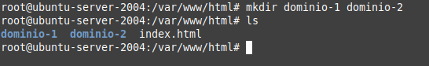
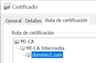
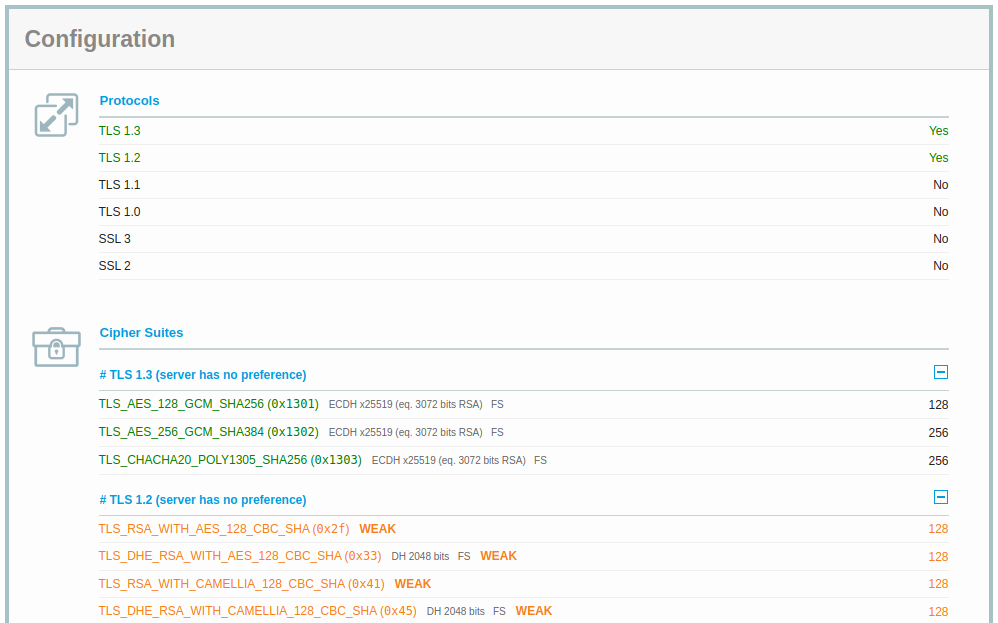

Caso Práctico. Uso de certificados en Servicios WEB
1. Escenario
Supongamos que tu subsistema (organización) necesita un certificado firmado para el servidor HTTPS del subsistema. Esto significa que se necesita un certificado para el dominio (o dominios) en los que el servidor estará disponible.
El navegador web tiene que poder verificar el certificado y decirle al usuario que está accediendo a los servidores correctos del dominio de la URL que escribió y así establecer una conexión segura y privada.
Los navegadores utilizan un almacén de certificados que tiene una lista de AC. Este almacén de certificados puede ser propio del navegador (como en el caso de Firefox y sus derivados) o estar integrado con el almacén de certificados del sistema operativo (como en el caso de Chromium y sus derivados).
2. Introducción
¿Qué vamos a realizar?
- Punto 1. Vamos a instalar el servidor web apache (servicio web).
- Punto 2. Configurar 2 dominios con https, utilizando la infraestructura creada anteriormente en el Laboratorio PKI en Linux o Práctica 4. Easy-RSA.
La estructura que se montará en el sistema es la siguiente:
ca
├── certs
│ └── ca.cert.pem
├── crl
├── index.txt
├── intermedia
│ ├── certs
│ │ ├── ca-cadena.cert.pem
│ │ ├── dominio-1.cert.pem
│ │ ├── dominio-2.cert.pem
│ │ ├── intermedia.cert.pem
│ │ └── midominio.cert.pem
│ ├── crl
│ │ └── intermedia.crl.pem
│ ├── crlnumber
│ ├── csr
│ │ ├── dominio-1.csr.pem
│ │ ├── dominio-2.csr.pem
│ │ ├── intermedia.csr.pem
│ │ └── midominio.csr.pem
│ ├── index.txt
│ ├── newcerts
│ │ ├── 1000.pem
│ │ ├── 1001.pem
│ │ └── 1002.pem
│ ├── openssl.cnf
│ ├── private
│ │ ├── dominio-1.key.pem
│ │ ├── dominio-2.key.pem
│ │ ├── intermedia.key.pem
│ │ └── midominio.key.pem
│ ├── serial
├── newcerts
│ └── 1000.pem
├── openssl.cnf
├── private
│ └── ca.key.pem
└── serial
3. Recursos
- Servidor ubuntu server 20-04.5 LTS (servidor de tu subsistema/organización).
- Para realizar las explicaciones durante el caso práctico, se ha utilizado un ubntu server 20.04.3 LTS con ip 192.168.1.154 y adaptador de red en modo puente. Todos las configuraciones en la terminal se realizan con el usuario root.
- Servidor Apache --> Para trabajar con Certificados en un servidor web.
- Infraestructura PKI (CA raíz y CA Intermedia) creada en el Laboratorio PKI en Linux o Práctica 4. Easy-RSA.
4. Procedimiento
A continuación, se detallan una serie de pasos que permitirán tener en producción los puntos 1 y 2.
Paso 1. Se crean los certificados de los dominios y que serán para este caso:
- dominio-1.com
- dominio-2.com
Nombra los certificados de dominio para tu subsistema, ejemplos: gandia-upv.ciber, laplana-san-gva.ciber, etcétera.
A continuación, se necesitan los csr de
Hay que crear las key’s privadas de los dos dominios con los siguientes comandos:
#openssl genrsa -out intermedia/private/dominio-1.key.pem 2048
#openssl genrsa -out intermedia/private/dominio-2.key.pem 2048

El poner como extensión .pem en la key es porque lo tenemos así en el fichero openssl.cnf, pero podría ser txt o cualquier otro tipo de extensión o simplemente no poner, es decir, sería, dominio-1.key. El .pem es lo utilizado generalmente.
A continuación, se necesitan los csr de cada una de las keys privadas que hemos generada en los dos dominios. Para ello, ejecutamos el siguiente comando para crear el csr del dominio-1:
#openssl req -config intermedia/openssl.cnf -key intermedia/private/dominio-1.key.pem -new -sha256 -out intermedia/csr/dominio-1.csr.pem

y a continuación, ejecutamos el siguiente comando para crear el csr del dominio-2.
#openssl req -config intermedia/openssl.cnf -key intermedia/private/dominio-2.key.pem -new -sha256 -out intermedia/csr/dominio-2.csr.pem
A continuación, se generan los certificados para los 2 dominios, para ello, ejecutamos el siguiente comando par el dominio-1:
#openssl ca -config intermedia/openssl.cnf -extensions server_cert -days 365 -notext -md sha256 -in intermedia/csr/dominio-1.csr.pem -out intermedia/certs/dominio-1.cert.pem
El proceso nos pregunta si se quiere firmar el certificado donde responderemos que sí 'y' y posteriormente, nos pregunta si se quiere hacer el commit, responderemos que sí 'y' (ver figura inferior).
A continuación, realizamos lo mismo para el dominio-2:
#openssl ca -config intermedia/openssl.cnf -extensions server_cert -days 365 -notext -md sha256 -in intermedia/csr/dominio-2.csr.pem -out intermedia/certs/dominio-2.cert.pem
El proceso nos pregunta si se quiere firmar el certificado donde responderemos que sí 'y' y posteriormente, nos pregunta si se quiere hacer el commit, responderemos que sí 'y' (ver figura inferior).
A continuación, consultamos el fichero index.txt para ver si se han generado bien los certificados, para ello, ejecutamos el siguiente comando:
#cat intermedia/index.txt
Como se puede observar en la figura anterior, se tiene el certificado revocado y los 2 nuevos válidos para los 2 dominios.
El siguiente paso consiste en montar en apache los certificados.
Paso 2. Instalar apache
En primer lugar, se instalar apache en el servidor:
#apt install apache2
Paso 3. Preparar el entorno de apache
Aunque aquí el servidor donde está la CA es el mismo servidor donde se encuentra apache, en una situación real no sería así, estarían separados por seguridad y rendimiento en los sistemas.
Los certificados no se van a leer desde /root/ca, sino que los copiaremos en los directorios correspondientes.
Las claves privadas que están en /root/ca/intermedia/dominio-1.key.pem y dominio-2.key.pem las llevaremos donde están los certificados → /etc/ssl/private.
root@ubuntu-server-2004:~/ca/intermedia/private# cp dominio* /etc/ssl/private
Las claves públicas, se han de copiar en el directorio certs ubicado en /etc/ssl/certs.
root@ubuntu-server-2004:~/ca/intermedia/certs# cp dominio* /etc/ssl/certs
Por último, también copiamos la cadena en el directorio certs:
root@ubuntu-server-2004:~/ca/intermedia/certs# cp ca-cadena.cert.pem /etc/ssl/certs
A continuación, hay que configurar apache para que pueda funcionar con lo que se ha realizado anteriormente. Estando en la consola, accedemos a la ruta /etc/apache2/ y consultamos los sitios disponibles tanto en http (000-default.conf) como en https (default-ssl.conf).
Lo que haremos es copiar el fichero default-ssl.conf a dominios-ssl.conf para trabajar sobre este último.
A continuación, editamos el fichero dominios-ssl.conf y modificamos los parámetros con el sufijo #JCRequena (etiqueta para conocer qué modificaciones realizar en el fichero).
Ejemplo de etiqueta JcRequena con los parámetros a modificar.
Hay que añadir una nueva sección VirtualHost para dominio-2 que será igual a la anterior pero cambiando dominio-1 por dominio-2 (ver figura inferior).
Paso 4. Activar el módulo ssl en apache
A continuación, vamos a activar el módulo ssl en apache, para ello, ejecutamos el siguiente comando:
#a2enmod ssl
Como resultado, nos dice que hay que reiniciar apache para que se aplique la configuración que acabamos de realizzar.
Para que sea más completo, se debería modificar VirtualHost del puerto 80 del fichero 000-default.conf para hacer una redirección, es decir, habría que hacer lo siguiente:
ServerName dominio-1.com
Redirect permanent / https://dominio-1.com
Hacemos también una redirección para el dominio-2, por lo que añadimos otro VirtualHost en el fichero 000-default.conf.
Si se tiene un dominio que responde a 2 nombres, se tiene la directiva ServerAlias dominio3.com, es decir, si se pone http://dominio3.com también se redirigría a https://dominio2.com. El fichero quedaría así:
#JCRequena: redirección del dominio-2
ServerName dominio-2.com
ServerAlias dominio3.com
Redirect permanent / https://dominio-2.com
Paso 5. Crear los directorios donde reside la página web
Estando en la terminal, accedemos a la ruta /var/www/html.
Es aquí donde se crean los directorios:
#mkdir dominio-1 dominio-2

Como ejemplo, vamos a copiar el index.html al directorio dominio-1 y dominio-2.
#cp index.html dominio-1
#cp index.html dominio-2
A continuación, hay que cambiar la propiedad de usuario y grupo a los ficheros index.html que acabamos de copiar para que sean de apache.
#chown -R www-data:www-data dominio-1
#chown -R www-data:www-data dominio-2
Con todo esto, ya se tiene el entorno preparado, ahora, hay que activar nuestro fichero de configuración de dominios-ssl.conf. Para ello, ejecutamos el siguiente comando:
#a2ensite dominios-ssl.conf
A continuación, hay que reiniciar apache para que todas estas modificaciones surjan efecto en el servidor web.
En entornos de producción NO debemos ejecutar el comando systemctl reload apache2 porque es muy peligroso, es decir, si hay algún error en alguna de las modificaciones realizadas, no se podrá levantar el servidor web y nos quedaremos sin servicio web. Lo que habría que realizar, es un test para que verifique que todo es correcto, es decir, apache revisa el fichero de configuración para comprobar que es correcto sintácticamente.
A continuación, se verifica que el fichero de apache es correcto mediante el siguiente comando:
#apache2ctl configtest
Como resultado nos da OK, por lo que ahora sí podemos reiniciar apache con seguridad.
#systemctl reload apache2
Paso 6. Comprobación
En estos momentos, ya se tienen en funcionamiento los dominios. Para comprobarlo, usaremos otra máquina virtual o nuestro anfitrión. Para este caso de estudio, la ip del servidor ubuntu server es 192.168.1.154 y se utilizará en
Dado que dominio-1.com y dominio-2.com no son dominios reales (no tienen una ip asignada), hay que incluirlo en el fichero hosts de mi equipo anfitrión.
Reiniciamos la interfaz de red para que se hagas efectivas las modificaciones en el fichero hosts:
#sudo /etc/init.d/networking restart

En los sistemas Windows el fichero hosts está en C:\Windows\System32\drivers\etc.
Paso 7. Acceso a los dominos
En primer lugar, accedemos al sitio web dominio-1.com.
Pulsamos configuración avanzada.
Pulsamos Acceder a dominio-1 (nos aparece en la parte superior un mensaje que el sitio no es seguro).
A continuación, vamos a ver el certificado para consultar cuál es la organización del certificado, quién lo emite, etc..
Acceso mediante Chrome
Acceso mediante Firefox
Como se puede observar en las imágenes, se tiene:
|
Aparece MI-CA y la intermedia (ya que le hemos pasado la cadena). |
|
|
Usos de la clave: Para encriptar las comunicaciones y firmar. |
|
|
Autenticación de servidor. |
En el navegador Internet Explorer → Se ve la ruta de certificación.

Aparece como certificado de Servidores.
Los certificados se pueden exportar:
Aparece el mensaje ‘No se confía en este certificado de raíz de CA’ → porque no figura en el almacén de entidades de certificación raíz de confianza. Es decir, no está aquí (ver imagen inferior).
Por lo tanto, tenemos que instalarlo para que aparezca en el almacén de ‘Entidades de certificación de confianza’. Podemos exportar el certificado (usando firefox o chrome) o copiarlo desde /root/ca/certs y copiar ca.cert.pem en un fichero ca-cert.crt y este será el que instalaremos en el almacén. La idea es incluir el certificado que falta en el almacén de certificados.
Para hacerlo desde Chrome hacemos:
1. En la Pestaña ‘Entidades Emisoras’ pulsamos el Botón importar.
2. Importamos el fichero crt exportado anteriormente o el que está en el servidor.
3. Seleccionamos ‘Confiar en este certificado para identificar sitios web’ y pulsamos Aceptar.
Si buscamos ahora en la lista, encontramos nuestro certificado importado.
Y si pulsamos en los 3 puntos y seleccionamos ver:
Si utilizamos Firefox → Importamos/instalamos el certificado.
En estos momentos, cuando accedamos a la página web del dominio-1.com por ejemplo, ya no sale el mensaje de no confianza.
En la práctica real, para páginas web no nos valen los certificados autofirmados. Necesitamos un proveedor de certificados como puede ser https://www.gogetssl.com/
5. Proveedor de certificados
En la práctica real, para páginas web no nos valen los certificados autofirmados. Necesitamos un proveedor de certificados como puede ser https://www.gogetssl.com/
Los precios depende del tipo de certificado. Por ejemplo, necesitaríamos comprar un certificado para www.dominio-1.com. Pero si tengo subdominios, ejemplo, www.administracion.dominio-1.com, no valdría con el anterior, habría que comprar otro para el subdominio.
Otra opción (son más caros) son los certificados Wildcard, es decir, se compran así *.dominio-1.com → acepta subdominios.
6. Chequeo de certificados
Por último, existen páginas que nos permiten chequear un certificado para ver si es correcto.
https://www.ssllabs.com/ssltest
Como ejemplo práctico, vamos a verificar el certificado de areaproject.com y los posibles problemas que pueda tener.

Cosas que se pueden observar:
- El certificado comprado es del tipo *.dominio.
- Muestra el rango de fechas de validez (suele ser 1 año).
- No está revocado.
7. Referencias
Obra publicada con Licencia Creative Commons Reconocimiento No comercial Compartir igual 4.0